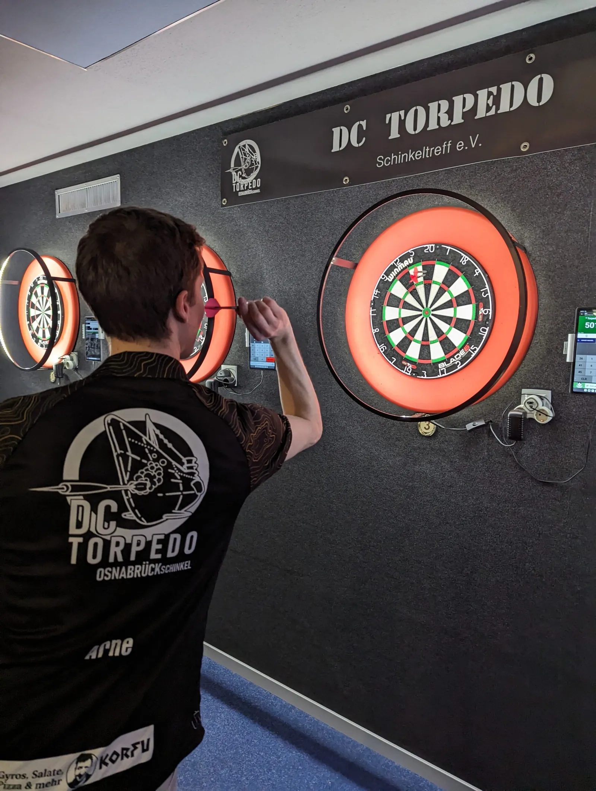
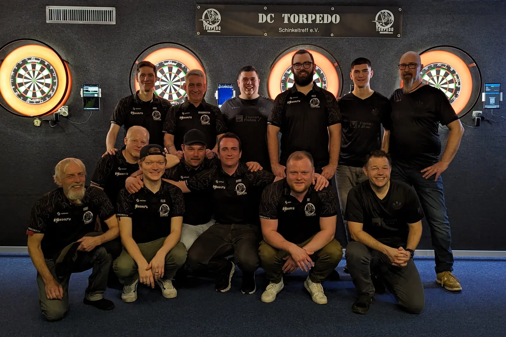
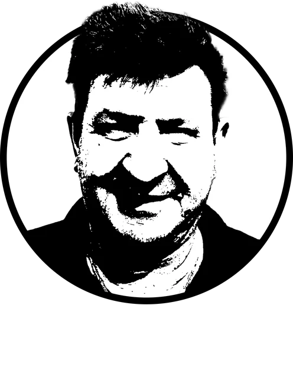
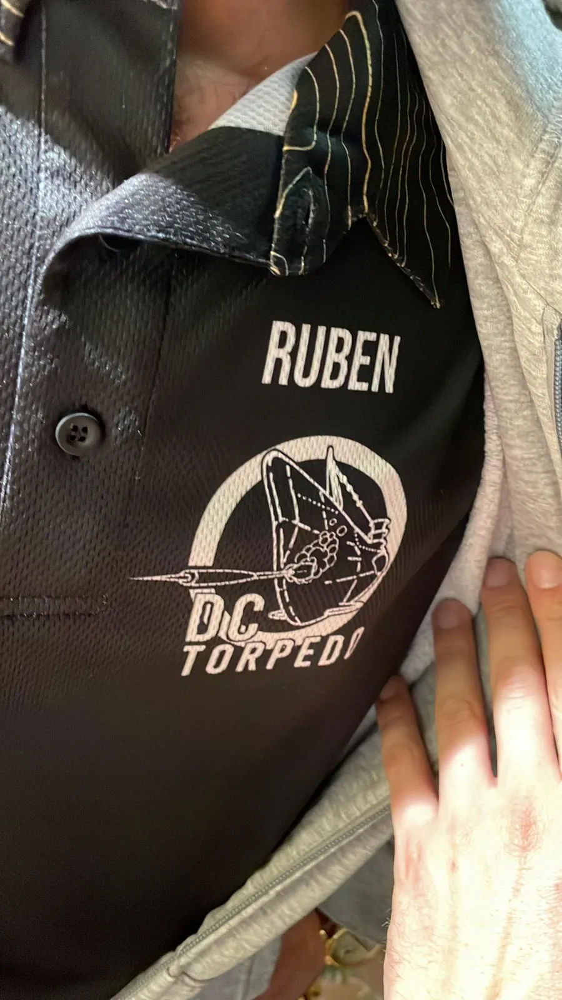

DC
DC 
Auswärtssieg in Hagen – Torpedo schlägt Teutonen B!
Was für ein Abend in Hagen! 🎯 DC Torpedo reist an, legt los wie die Feuerwehr und zeigt von der ersten Aufnahme an: Heute nehmen wir hier was mit! Es war ein Spiel voller Spannung, enger Dinger, …
Steeldart aus Osnabrück-Schinkel
Nächstes Spiel01Der Verein
Wir sind der DC Torpedo – ein Steeldart-Team aus Osnabrück-Schinkel. 2025 ungeschlagen aufgestiegen, Heimspiele im wunderschönen Schinkeltreff und ein Sponsor, der uns mit griechischem Essen durch so manche Halbzeit bringt.



02Saison 2026/27 · Bezirksliga 04
Tabelle und Spielplan kommen live aus dem Ligasystem des Niedersächsischen Dartverbands. Termine kannst du direkt in deinen Kalender holen.
03Neues aus dem Schinkel
Was für ein Abend in Hagen! 🎯 DC Torpedo reist an, legt los wie die Feuerwehr und zeigt von der ersten Aufnahme an: Heute nehmen wir hier was mit! Es war ein Spiel voller Spannung, enger Dinger, …

Nach einem harten Kampf haben wir es geschafft, ungeschlagen.

Am vergangenen Samstag, den 09.03., stand unser Darts Team DC Torpedo einem der Top-Teams der Liga, den Hüggelspikes, gegenüber. Als Tabellenführer waren die Hüggelspikes nicht ohne Grund an der …
04Heimspielstätte

Die Karte kommt von OpenStreetMap und wird erst nach Klick geladen.

05Powered by
Durch das großzügige Sponsoring vom Korfu wurden unsere einmaligen Trikots realisiert – und in so mancher Halbzeitpause verwöhnt uns Korfu mit herausragender Verpflegung.
Vielen Dank, Korfu!
Korfu
06Fanshop
Zeitlos, schick, unvergleichliches Design.
Design ansehen & bestellenZeitlos, schick, unvergleichliches Design – in Weiß.
Design ansehen & bestellenEine tolle Tasse mit dem DC-Torpedo-Logo. Für alle, die noch alle Tassen im Schrank haben wollen.
Bei uns anfragenBei Fragen schreib uns – wir melden uns innerhalb einer Woche.
07Mitspielen
Schreib uns ’ne kurze Nachricht oder komm einfach vorbei und spiel eine Runde mit.